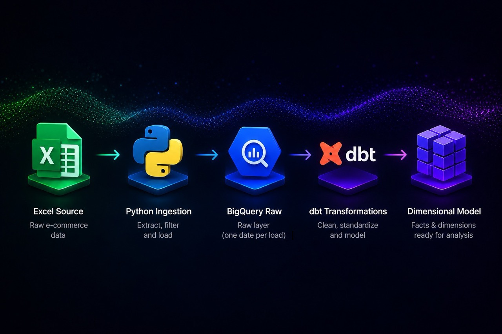

E-commerce Data Pipeline
An end-to-end batch pipeline built with dbt and Airflow,
extended with business logic testing, pipeline validation and CI/CD.

An end-to-end batch pipeline built with dbt and Airflow,
extended with business logic testing, pipeline validation and CI/CD.

A personal project to surface play history insights from an encrypted proprietary database using AI-assisted research, SQL querying, Python scripting and XML manipulation.

Client work: a production ETL pipeline for one of the world's leading airlines and hospitality brands, built as a freelancer for the performance marketing agency Herd.
Analysed 1.2 million readings from 11 Leeds cycle counters (2018-2023). Found weekend cycling recovered to 41.8% above pre-COVID levels, against 3.7% for weekdays.
Scraped data for 206 UK festivals and combined it with 30 years of historical weather data, scoring and comparing festivals by their typical weather.